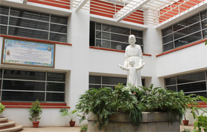

|  |
The St. Josephs College campus is located in the heart of the city on 8.44 acres of land. The campus consists of a PG Block, UG Block, hostels for students, Fathers’ residence, guest houses, and a playground.
The UG Block is divided into two sections namely the Humanities Block and the Science Block. The Humanities Block consists of classrooms, an Audio Visual room, a language lab, a staff infirmary, and staff rooms of various departments. The Library of the UG campus is situated in the Humanities Block. |
| The Science Block contains laboratories of various departments, an observatory, audio-video studios, and a staff seminar hall along with classrooms and staff rooms.The Examination Centre and the Administrative offices are located in the Science Block.
The newly inaugurated Magis block is host to a plethora of sports facilites(gym,basketball etc, the Computer and Maths Departments and their labs as well as a large cafeteria which caters to the staff and students. The UG campus also has the Auditorium Block which has a seating capacity of 1200 and four ICT enabled smaller halls within the building. | |
|
The Post Graduate and Research Centre referred to as the PG section is located on a 1 acre land adjacent to the UG campus. The PG section has separate laboratories for each discipline, studios, editing suites, and a library facility exclusively for the use of students from the PG courses. The PG section also has an auditorium with a seating capacity of 350. A dedicated administrative office function in the PG section.
The College has two canteens, one in the PG section and another in the UG campus. A variety of cuisines, both Indian and continental, are served in the canteens. A kiosk serving short eats has been set up adjacent to the Humanities Block. | |
|
The College has the best sports facilities with a multipurpose ground for football, cricket, hockey, throwball, and volleyball. Badminton and basketball courts are also made available for the use of the students.
The hostel facility for boys in the campus is located in a heritage building in the UG campus. Both the campuses also have plenty of greenery and quiet spaces which encourage thought and contemplation. The banyan tree in the campus has an open space where performances are held during various events. The college is dedicated to creating green spaces within the campus and many initiatives taken by the students and the staff are visible in both PG and UG campuses. |